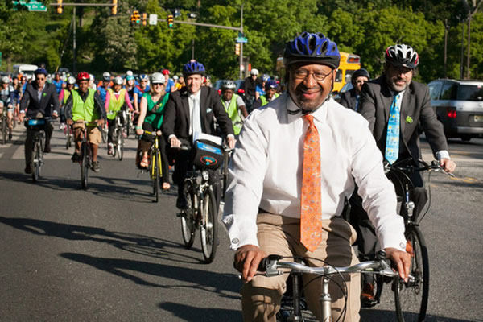
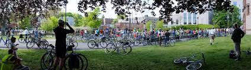

Find your community!
On this dashboard, we show information relevant to those who like to bike with others - both for work and for fun! First, this map will give you an idea of the number of people in each state that commute to work. The numbers may be small, but everything is relative!
Commuting to work by bicycle is a great way to stay fit, fight pollution, avoid traffic delays, and save money. Click below to learn more details about the best cities in the United States for bike commuting. We also have information about which bicycles are best for commuting.

Where do bike clubs exist?
Everywhere!
Guess what? It is not just fun to bike to work...it is also fun to bike with friends! We have information and resources about how to find bike clubs near your location! This link has a zip code locator where you can enter potential neighborhoods and know about the clubs in that area.
There are many advantages to group cycling. When you ride with others, you will ride stronger and longer! Bike clubs can also introduce you to new local routes and expand your knowledge of the sport. On top of that, a cycling club can double as a social network, providing an easy way to get—and stay—connected with community.
